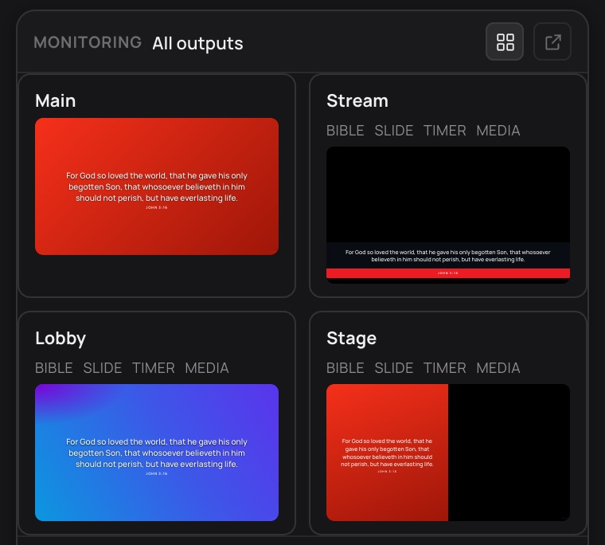

KAIRO listens to the preacher, works out which scripture is cited or quoted, and puts it on your church screens within a second or two. Slides, songs, outputs and cameras included.
Fetching latest release from GitHub…
KAIRO is open source and free, so we don't pay Apple's $99/yr Developer ID or Microsoft's SmartScreen fee. Your OS will warn you on first launch — here's the one-time bypass for each platform:
Or run once in Terminal: xattr -dr com.apple.quarantine /Applications/KAIRO.app
.msi. SmartScreen will say "Windows protected your PC".sudo dpkg -i KAIRO_*.deb then launch from your apps menu.sudo rpm -i KAIRO-*.rpm
KAIRO listens to the preacher, works out which scripture is being cited or quoted, and puts it on your screens within a second or two. When it isn’t sure it offers the verse in Possible Matches instead of sending it, because a wrong verse on screen is worse than a missed one.
Fewer suggestions with less noise, and the same verses found. Quotes with distinctive wording are offered even when the preacher doesn’t cite them.
“John four verse four” read with 1 John’s words becomes 1 John 4:4. A citation whose book wasn’t heard is placed by the quote that follows.
On the test sermons the offline engine now matches Deepgram. Translating slides to French, Spanish and Portuguese works again, on your own machine.
The main text, every scripture marked read, cited or alluded to, the themes, and the people of the Bible named.
Import the way it’s written: headings start slides, line breaks stay, and each paragraph becomes one slide.
The default Bible theme is now Full — Background on Crimson, matching KAIRO’s own colours.
Hears citations and quotes as they’re preached and puts the verse on screen. It remembers the sermon’s book and chapter, so “verse 17” or “the next verse” still resolves.
When it’s unsure it offers the verse for you to send instead of sending it. Paraphrases are only ever offers.
Use Deepgram, or transcribe entirely on your machine with no internet, no API key and no monthly cost. The offline model downloads on first use.
Understands spoken verse numbers in English, Spanish, French and more, and reads “from 28 down to 31” as a range.
Notices when an interpreter is speaking, so their words aren’t mistaken for the sermon, and offers a Multi-Language theme for Spanish, French and Portuguese.
While a lyrics slide is up, scripture it hears is offered in Possible Matches rather than sent over the song.
Run the whole service from one place, not only the verses.
Design layered on-screen looks with your own fonts, colours, gradients and blur, with a live preview before it goes to the display.
See every output in one view, with what’s live and what’s next.
Send to screens, NDI, Syphon and DeckLink, each with its own theme and layout. A saved screen waits for you and reopens when it’s plugged back in.
Cameras with Preview and Program, layouts, and a key for each input. Press Space to send.
Stream and record from KAIRO, with recording that copies the stream’s own picture so nothing is encoded twice.
Add KAIRO as an NDI or Syphon source in OBS, ProPresenter, vMix or Resolume, or write the verse straight into an OBS text source.
Download the installer for your platform above, open it, and drag KAIRO to your Applications folder (macOS) or run the installer (Windows).
Open Settings → Audio. Offline runs entirely on your machine — no internet, no API key. Deepgram is more accurate; sign up at deepgram.com for 12,000 free minutes/month and paste the key in.
Plug in a line-level feed from your mixing board, or use a USB interface. Select the audio input in Settings → Audio Device. A direct line-in gives the cleanest transcription.
KAIRO begins transcribing and displays detected verses in the live queue. From there they go to your screens automatically, or to OBS, ProPresenter and other apps as an NDI or Syphon source.